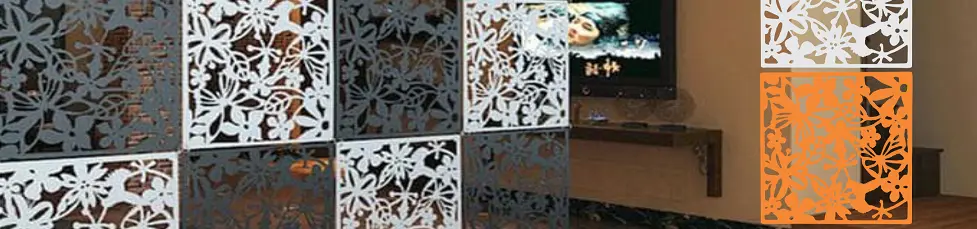

Partisi PVC: Solusi Praktis, Ekonomis, dan Estetik untuk Pembatas Ruangan
Dipublikasikan pada 21 Oktober 2025

Seiring bertambahnya perabot di rumah, kita sering kali membutuhkan pembatas ruangan untuk menata tata letak dan fungsi setiap sudut. Misalnya, jika Anda menambahkan area baca di dekat ruang keluarga, partisi bisa menjadi solusi cerdas untuk membedakan kedua area tersebut tanpa perlu membangun dinding permanen.
Partisi ruangan berfungsi menciptakan batas yang jelas, memberikan kenyamanan agar setiap area memiliki fungsinya masing-masing, namun tetap terasa terhubung dengan ruangan lainnya.
Mengapa Memilih Pembatas Ruangan Berbahan PVC?
Pilihan pembatas ruangan kini semakin beragam, dari desain, bahan, hingga harga. Salah satu yang sedang populer adalah partisi ruangan berbahan Polyvinyl Chloride (PVC). Bahan ini dikenal ringan, tahan lama, dan harganya relatif terjangkau.
Partisi PVC umumnya hadir dalam bentuk siap rangkai. Setiap panel berbentuk kotak atau motif tertentu dihubungkan satu sama lain menggunakan ring logam, mirip seperti gantungan kunci.
Kelebihan dan Kemudahan Perawatan Partisi PVC
Salah satu keunggulan utama partisi PVC adalah kemudahannya dalam pemasangan. Anda hanya perlu menghubungkan setiap panel menggunakan ring besi bawaan, lalu menggantungkannya pada paku atau gantungan yang sudah dipasang di langit-langit atau dinding. Cara ini membuat partisi PVC berfungsi layaknya tirai dekoratif.
Selain mudah dipasang, partisi PVC juga praktis dalam perawatan. Bahan PVC tidak mudah menyerap debu atau kotoran. Untuk membersihkannya, Anda cukup menyemprotkan pembersih dapur dan mengelapnya dengan kain bersih. Dalam hitungan menit, partisi kembali bersih dan siap mempercantik ruangan.
Estetik dan Multifungsi
Partisi PVC tersedia dalam berbagai motif dan warna, sehingga mudah disesuaikan dengan tema interior rumah Anda. Selain cocok untuk ruang keluarga, partisi ini juga ideal untuk kamar tidur, ruang kerja, bahkan kafe atau studio foto.
Jika Anda ingin memisahkan fungsi ruang tanpa mengorbankan estetika, partisi PVC adalah pilihan yang praktis, ekonomis, dan menawan.
Video singkat tentang partisi PVC bisa Anda tonton di bawah ini. Semoga bermanfaat!